Ảnh minh họa cục bộ, không dữ liệu thật. Nhãn–ô nhập8px; nhóm nút12px; nội dung16px; khối trang24px. Bộ hình cuối66ảnh tại375/768/1280. Ảnh form dùng chung có thêm nút đổi lịch mẫu để kiểm tra lịch tuần.
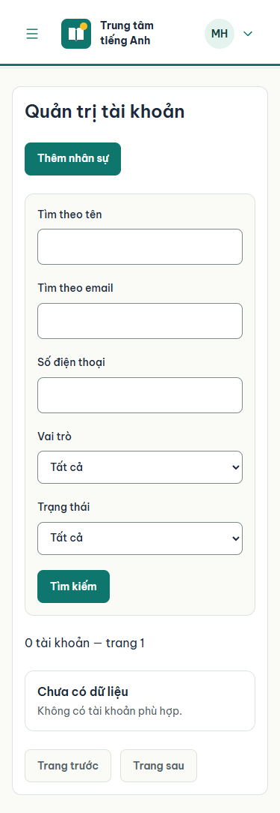
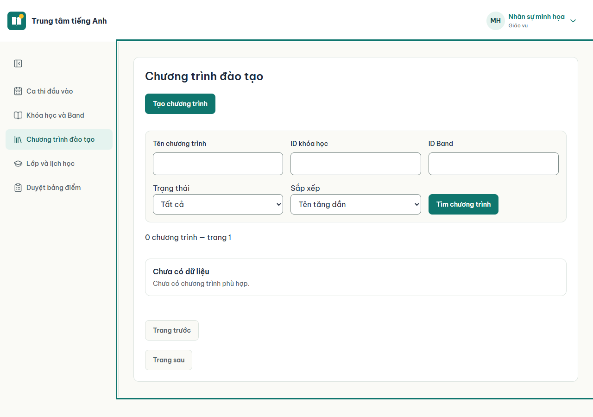
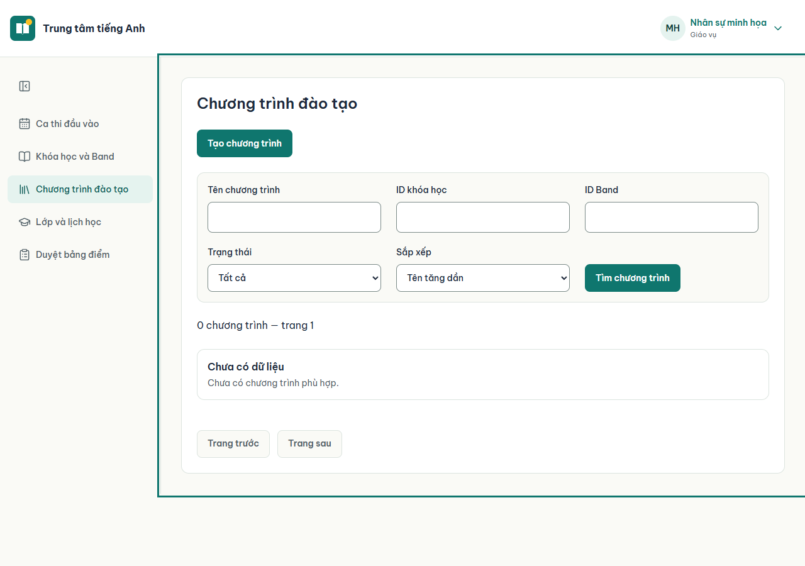
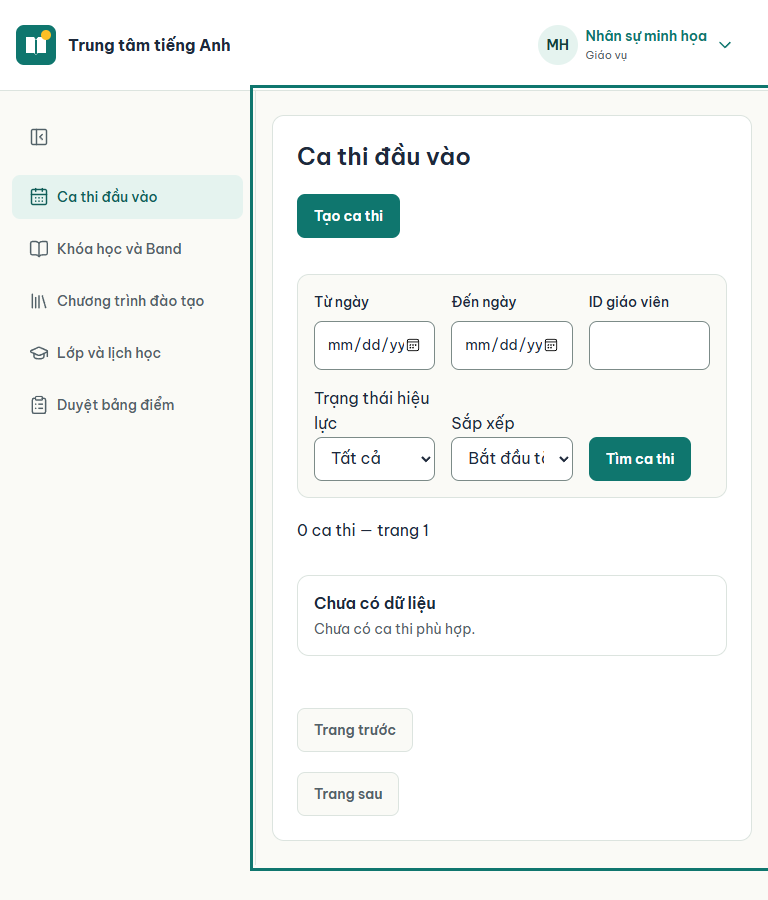
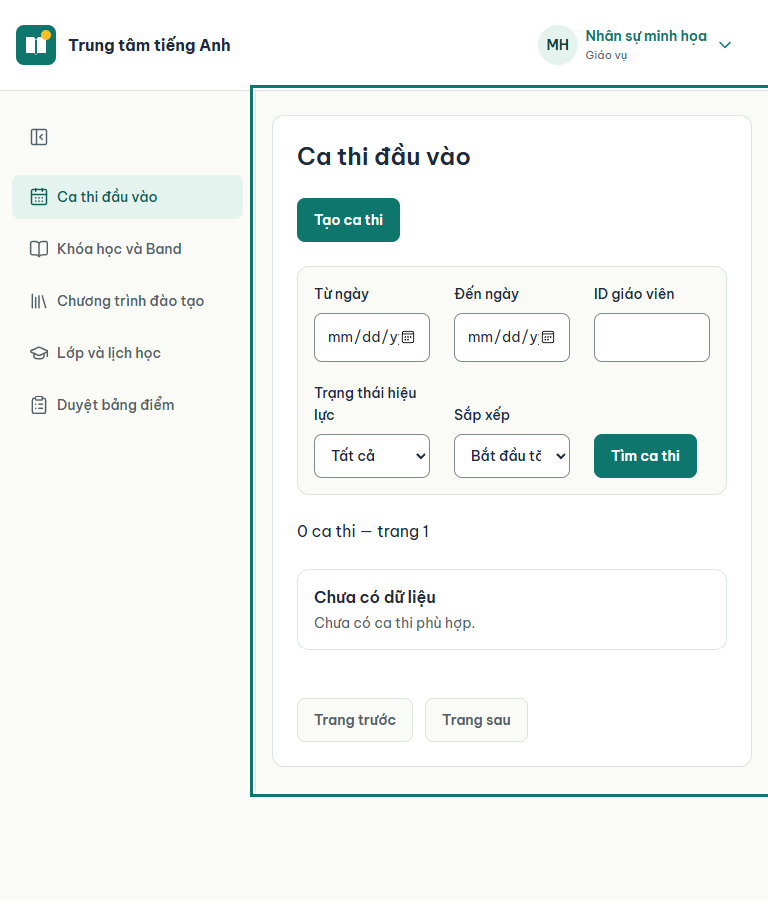
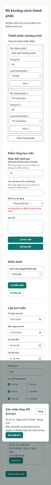
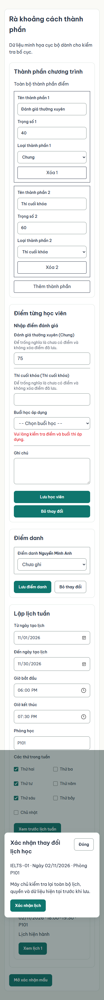
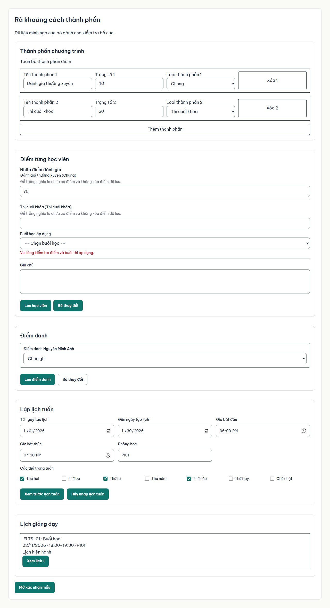
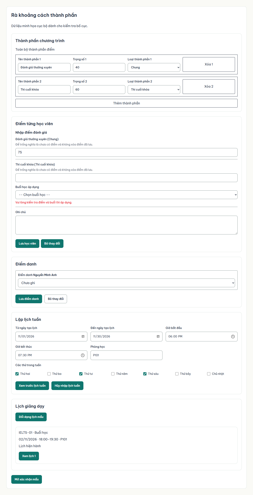
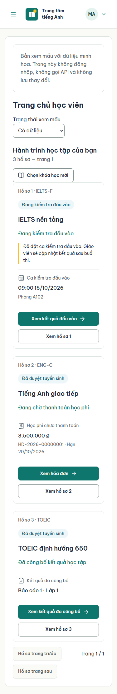
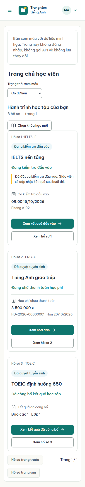